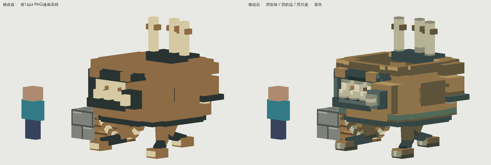
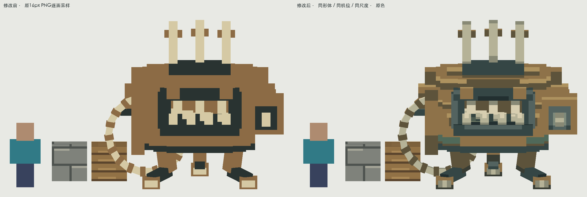
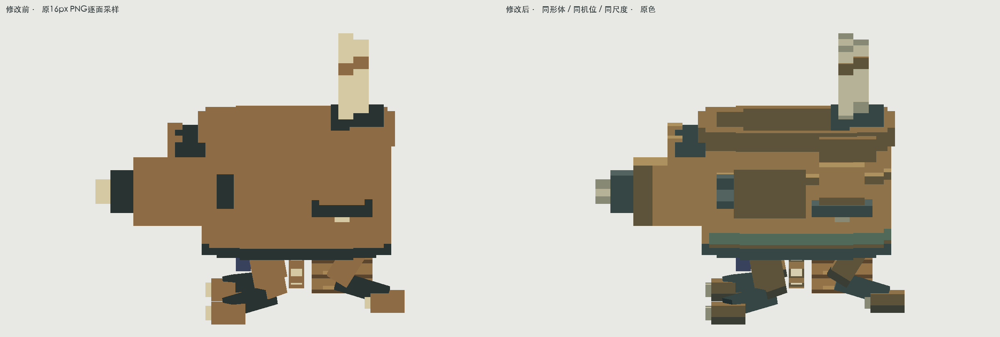
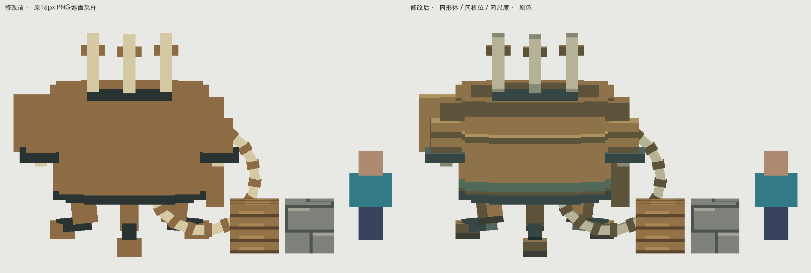
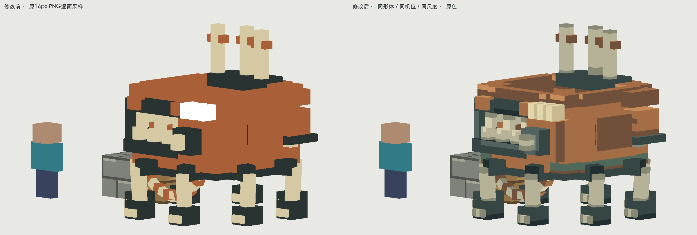
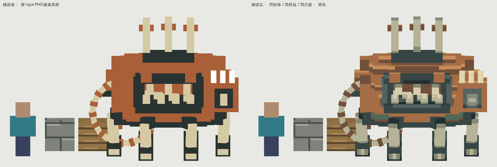
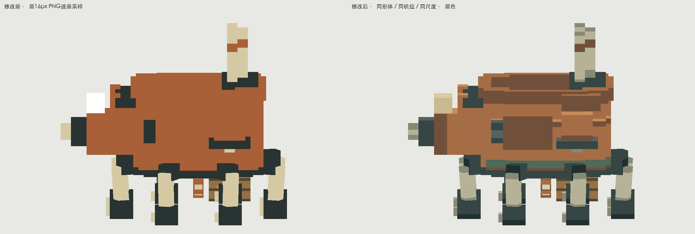
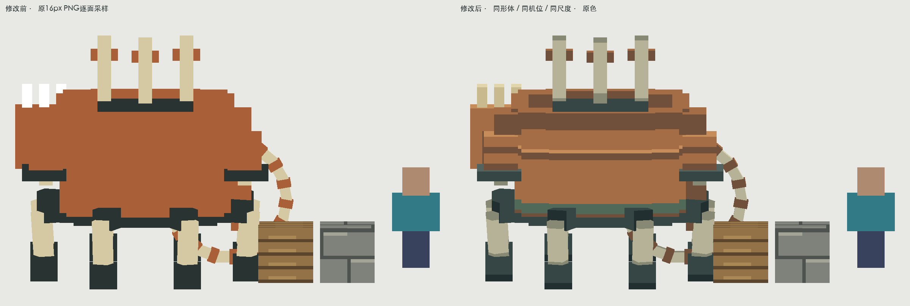
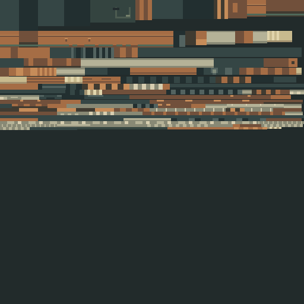

断代凶镬 · 饕宴之尸 · 像素材质补完
原先鼎壁、钟体与攻城机构共用一片褐色。现在按完整铸壳组织铜色与接缝，口缘用暗铁、骨齿突出前端，内壁和油面另分层，铜绿只落在下沿接缝。撞击面和传动杆分材质。
暮色PinchBeetle、FireBeetle的口/背壳/暗腹分区；Alex’s Mobs鳄龟与RockyRoller的硬壳与腹下连接；Quark Toretoise的顶壳、浅口和暗底。没有复制壳纹或铜色。
全部画面为实际PNG逐面采样的软件预览；含原色与基础漫反射，没有粒子/发光。不是游戏截图。已验证原生资源解析与隔离重新导出；整包构建、实际客户端加载和战斗待验证。二阶段前32tick保留一阶段铜色，之后切暖铜；两张图集共用918个UV岛并全部绘制，避免新足错采。未改变切换时刻或热化机制。
三足凶镬
dynasty:taoyan_zhishi同机位、同尺度；旁置玩家1.8m与一格石砖/木材参照。尺寸、骨架、攻击时间轴保持原样。

左：修改前；右：本轮。点图看原尺寸。正面、侧面、背面对照

front · 同条件前后
side · 同条件前后
back · 同条件前后原色、基础光照与近景
PNG原尺寸、整数倍放大、逐面UV
原始512×512图集。有效面按模型单位绘制，并非放大旧图。灰度、暗处与玩家观察距离
完整代表动作 · 固定相机
每条覆盖开始到恢复，共24帧。原动作不改时序；离线解释器不能代替游戏动画和服务器接触验证。
八足骨镬
dynasty:taoyan_zhishi_phase2同机位、同尺度；旁置玩家1.8m与一格石砖/木材参照。尺寸、骨架、攻击时间轴保持原样。

左：修改前；右：本轮。点图看原尺寸。正面、侧面、背面对照

front · 同条件前后
side · 同条件前后
back · 同条件前后原色、基础光照与近景
PNG原尺寸、整数倍放大、逐面UV

原始512×512图集。有效面按模型单位绘制，并非放大旧图。灰度、暗处与玩家观察距离
完整代表动作 · 固定相机
每条覆盖开始到恢复，共24帧。原动作不改时序；离线解释器不能代替游戏动画和服务器接触验证。
贴图切换边界